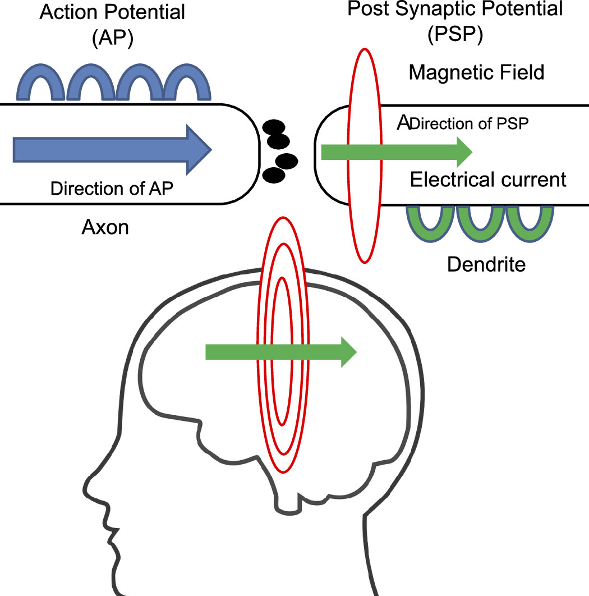
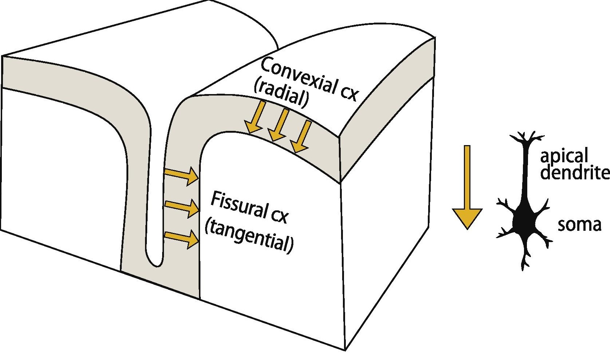

MEG Basics
Magnetoencephalography (MEG) is a neurophysiological technique used to measure the magnetic fields generated by neuronal activity in the brain. Although it is closely related to electroencephalography (EEG), it remains distinct in its approach and application. MEG is used to map brain function, particularly in cognitive and clinical neuroscience. It is highly effective for studying brain dynamics and localization of brain functions.
Definitions and Basics
Overview
Magnetoencephalography (MEG) is a non-invasive technique used to image brain activity by measuring the magnetic fields generated by neural activity. MEG is conducted with a magnetometer, a specialized device (such as a coil) that detects extremely small magnetic fields, ranging from femto-Tesla (10-15) to pico-Tesla (10-12). This method provides exceptional temporal resolution, down to sub-millisecond levels, and highly accurate spatial localization, typically within a few millimeters, particularly for sources close to the brain's surface.
Physiological Basics
The primary physiological sources of MEG and EEG signals are the post-synaptic currents in cortical pyramidal cells. Due to the consistent orientation of the apical dendrites of these pyramidal cells, which are aligned perpendicular (normal) to the cortical surface, they direct the overall macroscopic neural currents to flow in a perpendicular direction to the cortical surface.
The magnetic field detected in MEG is generated by a variety of neural activities, including postsynaptic potentials, intracellular longitudinal currents, synchronized slow currents, subthreshold oscillations, and postspike after-potentials. Estimating the magnitude, orientation, and position of the underlying electrical currents from the magnetic field measured outside the skull is a complex task known as an “ill-posed” inverse problem, which can have an infinite number of possible solutions.
Most of the cortical signals captured by MEG are believed to originate from the neocortical sheet, with the method being particularly sensitive to current sources that are tangential to the scalp, such as those found in the brain's fissures. However, the portion of the cortical sheet that cannot be resolved by MEG is thought to be minimal (less than 5%), and studies have shown that some radial sources, such as those on the lateral surface of the brain, can also be detected. The main axis of pyramidal neurons, which are considered to be the main sources of the MEG signals, is perpendicular with respect to the cortical surface. Thus, currents in the walls of fissures are tangential with respect to the skull surface and, therefore, are the main contributors of MEG signals. The current direction as such depends on the activation type (excitation, inhibition) of the neuron and the site (superficial, deep) of activation.
The magnetic fields measured by MEG are incredibly weak, ranging from 10-12 to 10-15 Tesla, which is minuscule compared to the Earth's magnetic field (around 10-12 to 10-15 Tesla) and even the magnetic fields generated by the heart and muscles. Consequently, one of the main challenges for MEG is isolating these tiny brain-related signals from the much stronger external magnetic fields. To achieve this, MEG systems rely on extremely sensitive sensors, advanced filtering techniques, and effective shielding to minimize the influence of external noise. The issue of detecting radial sources will be explored further in later sections.
 Fig 1. A (left) – the origin of MEG signals. The red circles represent the magnetic field induced by the cumulative electrical current (green arrow) from postsynaptic potentials measured by MEG. The blue arrow shows the direction of action potential propagation; B (right) – schematic presentation of convexial and fissural currents in a slab of the cortex.
Physical Basics
MEG recordings are based on the phenomenon of electromagnetic induction (also known as Faraday's law), which is a process where a conductor (i.e., pick-up coil) placed in a changing magnetic field causes the production of a voltage across the conductor. The amplitude of this voltage is instantaneously proportional to the magnetic induction and is readily measurable. From a physics perspective, Faraday's law states that a changing magnetic field within a closed loop of wire induces an electromotive force (EMF) or voltage in the wire. This induced voltage is directly proportional to the rate of change of the magnetic flux through the loop. In the context of MEG, the brain's neural activity generates time-varying magnetic fields, which are detected by pick-up coils (usually arranged in gradiometers) placed around the head.
In MEG systems, the pick-up coils are typically connected to superconducting quantum interference devices (SQUIDs), which are extremely sensitive magnetometers capable of detecting these tiny induced voltages. SQUIDs operate at very low temperatures, where superconductivity allows for nearly perfect conduction, enabling the detection of minute magnetic fields with high precision.
The relationship between the induced voltage and the magnetic field strength allows MEG to accurately capture the temporal dynamics of neural activity. Additionally, the spatial distribution of the magnetic fields, measured across an array of sensors, enables the reconstruction of the locations of active brain regions. The use of gradiometers, which measure the difference in magnetic fields between two nearby points, helps to further reduce environmental noise and isolate the signals originating from the brain. This combination of electromagnetic induction and advanced sensor technology forms the foundation of MEG, allowing for precise, real-time imaging of brain activity.
MEG System Components
Sensors
- SQUID Sensors: Superconducting devices that are cooled to cryogenic temperatures to detect tiny magnetic fields.
- Sensor Array: Typically, a MEG system consists of 100-300 sensors arranged in a helmet-like structure that covers the scalp.
Data Acquisition Unit
- Amplification & Filtering: MEG signals are amplified and filtered to remove noise and extract relevant information.
- Sampling Rate: High temporal resolution requires a sampling rate of 1000 Hz or more.
Magnetically Shielded Room
- Purpose: MEG is conducted in a magnetically shielded room to minimize external magnetic interference.
- Design: The room is lined with materials that block environmental magnetic fields, allowing for the detection of the brain's faint magnetic signals.
Fig 2. MEG system components [Narasaki, K. et al., IOP Conference Series: Materials Science and Engineering. Vol. 755. No. 1. IOP Publishing, 2020.]
Data Analysis and Source Localization
Data Acquisition
Data acquisition in MEG involves the precise recording of the brain's magnetic fields using highly sensitive detectors, typically Superconducting Quantum Interference Devices (SQUIDs) or Optically Pumped Magnetometers (OPMs). These sensors, arranged in a dense array within a helmet-like structure, detect the weak magnetic fields generated by neuronal currents, particularly those in cortical pyramidal cells. The recording environment is crucially controlled, with MEG systems housed in magnetically shielded rooms (MSRs) to minimize interference from external magnetic sources. High sampling rates, often ranging from 500 Hz to several kilohertz, allow for the capture of rapid neural events with millisecond precision. The raw data undergoes preprocessing steps, including artifact removal (e.g., eliminating signals from eye movements or cardiac activity) and baseline correction, to ensure that the signals reflect genuine brain activity. Advanced filtering techniques are applied to enhance the signal-to-noise ratio, while co-registration with MRI scans facilitates accurate localization of the neural sources within the brain’s anatomy. This integration enables the reconstruction of neural activity patterns with both high spatial and temporal resolution, making MEG a powerful tool for studying dynamic brain processes.
Data Reconstruction
Dipole Fitting: This method involves fitting a small number of dipoles (typically one or two) to the observed magnetic field data. The position, orientation, and moment of these dipoles are adjusted iteratively to minimize the difference between the predicted and observed fields, often using Root Mean Square (RMS) fitting or least-squares optimization. While dipole fitting is effective for modeling primary neural responses (evoked responses), it assumes that brain activity can be approximated by a small number of focal sources, which may not capture the full complexity of distributed brain activity.
Distributed Source Models: For more complex and spatially extended neural activity, distributed source models, such as the Minimum Norm Estimate (MNE) or Low-Resolution Electromagnetic Tomography (LORETA), are employed. These models assume that neural activity is distributed across the entire cortical surface and estimate the distribution of current sources that best explain the recorded magnetic fields. MNE, for instance, minimizes the overall current strength while still fitting the data, leading to a smooth, distributed estimate of brain activity.
Beamforming: Another advanced technique is beamforming, which creates spatial filters that pass signals from a specific location in the brain while attenuating signals from other locations. Beamforming is particularly useful for reconstructing time-varying brain activity and can be applied to continuous or oscillatory neural processes.
Time-Frequency Analysis: In addition to spatial localization, data reconstruction in MEG often involves time-frequency analysis to capture the dynamic aspects of neural activity. Techniques such as wavelet transform or Hilbert transform are used to analyze the frequency content of the signals over time, providing insights into oscillatory brain activity and its modulation by cognitive tasks or stimuli.
Artifact Correction and Signal Refinement: During reconstruction, additional steps are taken to correct artifacts and refine the signal. Techniques like Independent Component Analysis (ICA) are used to separate and remove non-neural signals (e.g., eye blinks, muscle artifacts), ensuring that the reconstructed sources accurately reflect neural activity.
Noise Sources and Artifacts
External Noise:
- Electric lines
- Motors and devices
- Doors, elevators, and other moving metal
- Vibrations of the building
- Earth's magnetic field
Artifacts:
- Eye movement – saccades, blinks, retinal signals
- Heartbeat – periodic magnetic pulse
- Breathing – small drifts in the data
- Muscle tension – especially in the head and neck
- Muscle movements – head, arms
- Magnetized implants etc
MEG Source Imaging
MEG source imaging involves the reconstruction of neural activity locations within the brain from the magnetic fields measured by MEG sensors. The process involves solving the "inverse problem," where the recorded magnetic fields are used to estimate the underlying neural currents. Various models, such as the Equivalent Current Dipole (ECD) for localized sources or distributed source models for more widespread activity, are employed to map these currents onto the brain's anatomical structure, often in conjunction with MRI data. MEG source imaging is particularly valuable in functional brain mapping, pre-surgical planning, and the study of neurological disorders, as it provides both precise localization and timing of brain activity, offering insights that are critical for understanding complex neural processes.
Source Models
- Equivalent Current Dipole (ECD): Used for modeling localized brain activity.
- Distributed Source Models: Used for estimating widespread neural activity across the brain.
Applications
- Functional Brain Mapping: Identifying specific brain regions involved in various functions.
- Pre-surgical Planning: Mapping critical brain areas before surgery.
- Study of Neurological Disorders: Investigating abnormal brain activity in conditions like epilepsy.
Figure 3. Magnetic source imaging in the presurgical evaluation of epilepsy patients. [Link]
MEG Glossary
- Artifact: Unwanted signals in the MEG data, often from sources like muscle activity, eye movements, or external magnetic interference.
- Axial Gradiometer: A type of sensor used in MEG to measure the difference in magnetic fields between two points along the same axis.
- Biomagnetism: The study of magnetic fields produced by living organisms, such as the human brain.
- Channel: Refers to each individual sensor or detector used in MEG to record magnetic fields.
- Co-registration: The process of aligning the MEG data with anatomical images, such as MRI, to accurately localize brain activity.
- Current Source Density (CSD): A method used to estimate the distribution of electrical currents that generate the observed magnetic fields.
- Dipole: A model used in MEG that represents a small region of the brain as a pair of opposite electrical charges or currents.
- Data Preprocessing: The steps taken to clean and prepare MEG data for analysis, including filtering, artifact removal, and noise reduction.
- Evoked Field: The magnetic field response generated by the brain in reaction to a specific stimulus or task.
- Event-Related Field (ERF): A change in the magnetic field that is time-locked to a specific event, like a sensory stimulus.
- Equivalent Current Dipole (ECD): A mathematical model representing a localized region of brain activity as a dipole, used in source localization.
- Frequency Band: The range of frequencies into which MEG signals are divided, such as alpha, beta, gamma, and theta bands, each associated with different types of brain activity.
- Gradiometer: A type of sensor in MEG that measures the gradient of the magnetic field, helping to cancel out external noise.
- Head Localization: The process of tracking the position of the subject's head relative to the MEG sensors to ensure accurate data collection.
- Helmholtz Coils: A set of coils used in MEG systems to generate a uniform magnetic field for calibration purposes.
- Inverse Problem: The challenge in MEG of determining the source of brain activity from the measured magnetic fields, which is inherently ambiguous.
- Localization: The process of determining the specific brain regions generating the observed magnetic fields.
- Magnetometer: A device used in MEG that directly measures the magnetic field strength.
- Magnetic Source Imaging (MSI): The process of visualizing brain activity by mapping the magnetic fields measured by MEG onto an anatomical image.
- Noise Covariance Matrix: A mathematical representation of the noise in MEG data, used to improve source localization accuracy.
- Phantom: A specially designed object with known properties used to calibrate and test MEG systems.
- Planar Gradiometer: A type of gradiometer where the two sensors are placed side by side in the same plane, making it sensitive to sources directly beneath the sensor.
- Primary Current: The initial current flow that generates the magnetic fields measured by MEG, typically associated with synaptic activity in the brain.
- SQUID (Superconducting Quantum Interference Device): A highly sensitive sensor used in MEG to detect extremely small magnetic fields produced by brain activity.
- Source Localization: The process of identifying the precise location within the brain where the observed magnetic fields originate.
- Signal-to-Noise Ratio (SNR): A measure of the strength of the signal relative to background noise, important for assessing the quality of MEG data.
- Time-Frequency Analysis: A method used in MEG data analysis to examine how the power of different frequency bands changes over time.
- Trigger: An external event or signal that marks the onset of a stimulus, used to align MEG data with specific experimental conditions.
- Waveform: A graphical representation of the MEG signal, showing how the magnetic field varies over time.
- Zero-Field Reference (ZFR): A calibration technique in MEG where the sensors are placed in a region with no magnetic field to measure and subtract any inherent noise in the system.